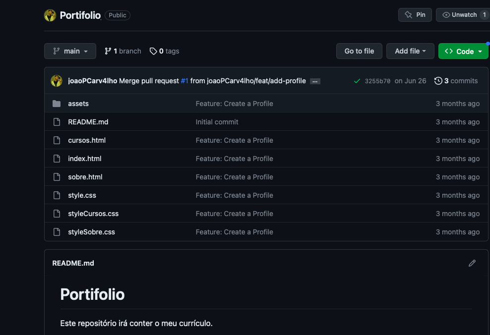
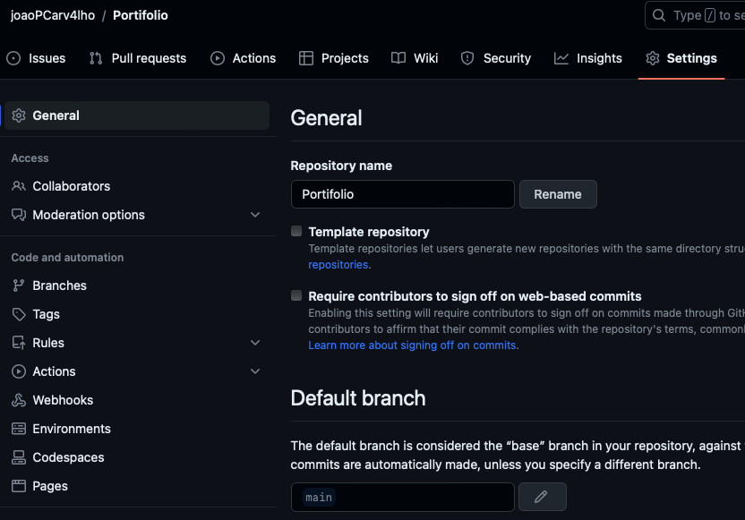
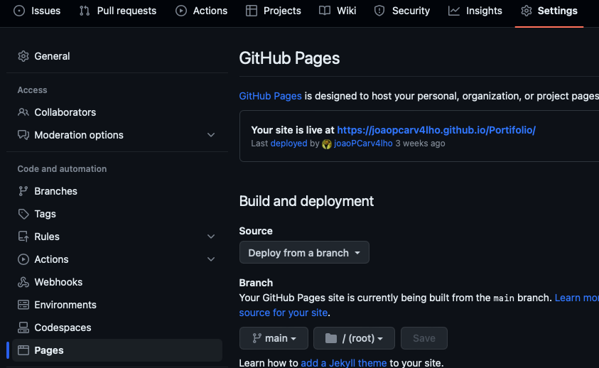
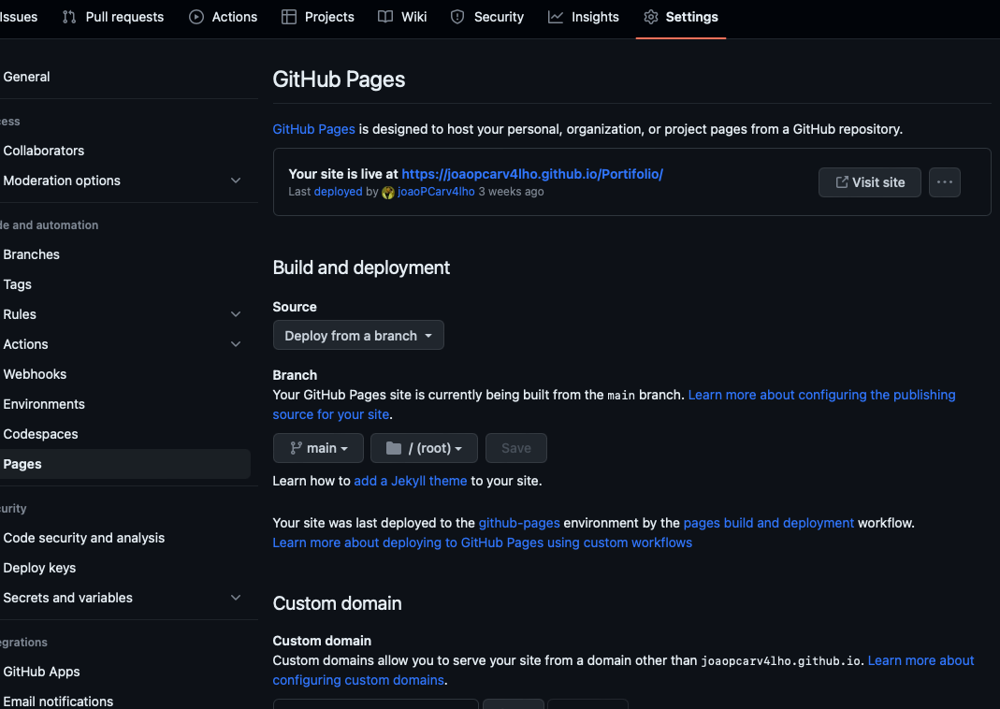

Como Utilizar?
O GitHub Pages oferece suporte gratuito para sites estáticos, básicos, como por exemplo uma home page. Lá também é possível relacionar um domínio que você tem.
Para que você consiga fazer isso siga o passo a passo listado abaixo:
-
Primeiro, acesse seu repositório estático e entre em configurações;


-
Segundo, entre em Pages, selecione a branch para publicação e clique em salvar.

-
Após isso, por último clique em Visit site.
